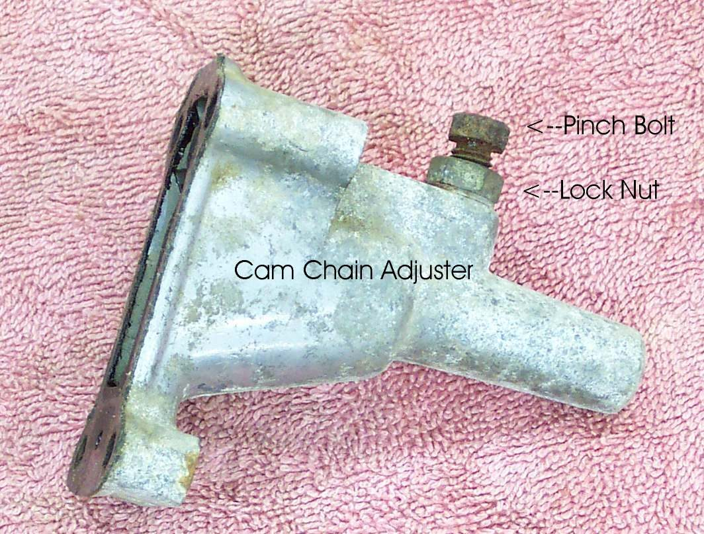
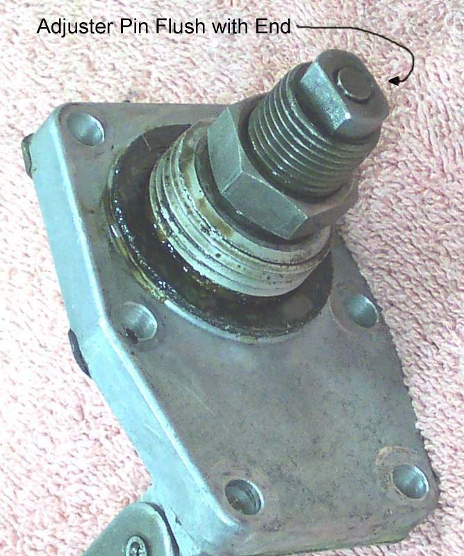
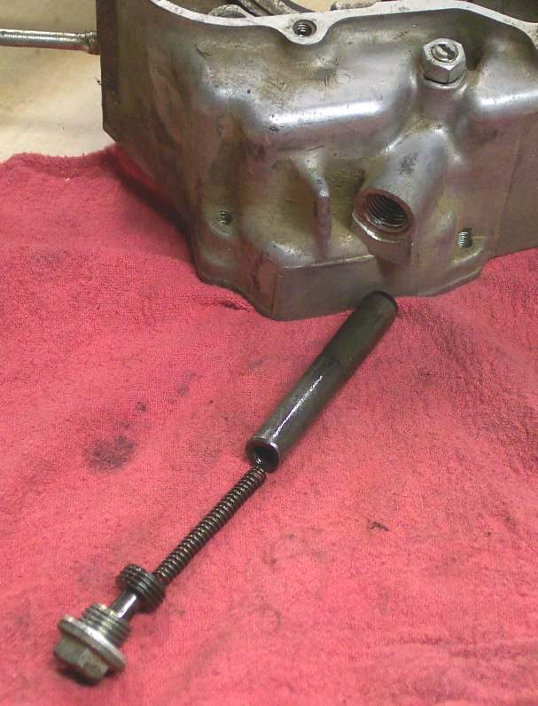
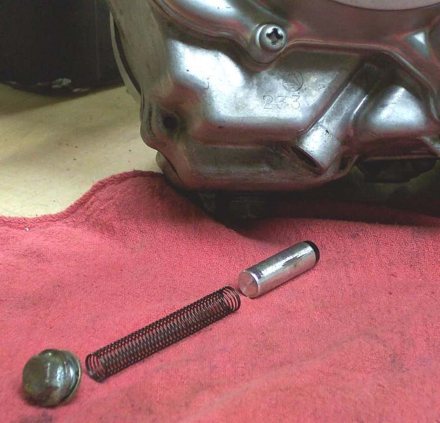
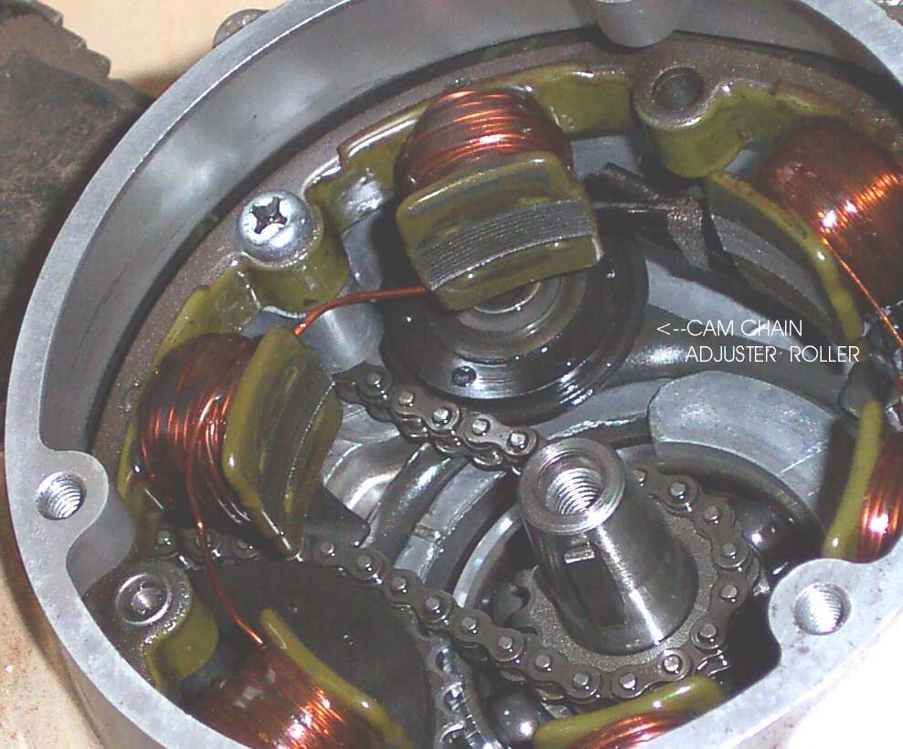
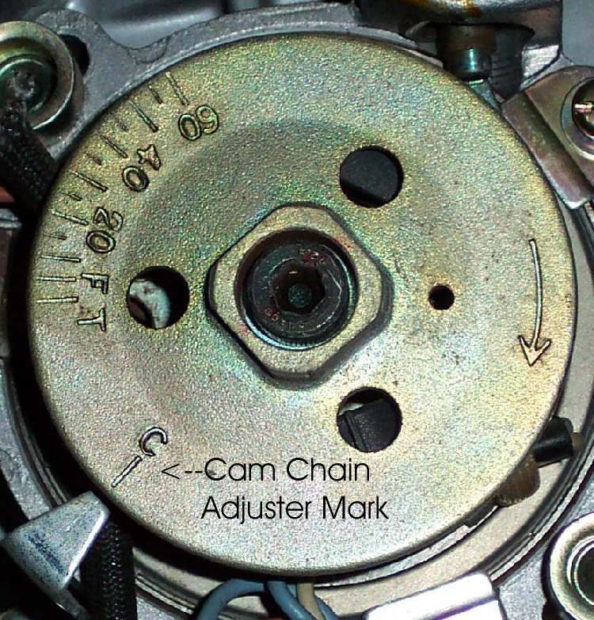
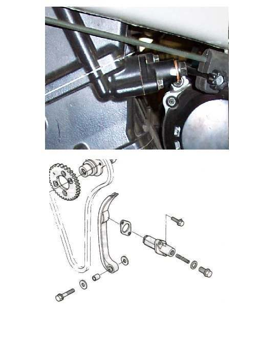
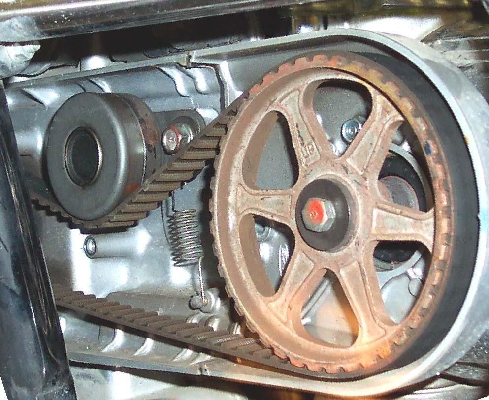

This page is only for overhead cam (OHC) engines, where a chain runs from the crankshaft up to a camshaft in the cylinder head. A tensioner (a spring or oil-pressure plunger with a rubbing blade) keeps the chain tight. Pushrod engines, such as the K-Light 125, have their camshaft down by the crankshaft, driven by gears, and have no cam chain; a top-end rattle on those engines is a valve clearance, pushrod or piston question. There is no common adjustment method across models, so use the manual for your engine.
Safety
- Never run an engine with a chain that is jumping or grinding. A chain that skips a tooth lets the valves hit the piston.
- Hot engine: keep hands away from the exhaust when listening.
What you can check safely
- Confirm your engine has a cam chain. Your manual or the parts diagram shows a cam sprocket under the head cover and a tensioner bolt on the back or side of the cylinder.
- Warm the engine. Listen at idle. A cam chain rattle is a light, fast clatter or slap from the cylinder, often loudest at idle and just after starting, and quieter at higher revs.
- Listen with a stethoscope or the handle of a long screwdriver against the cylinder near the tensioner, then near the valve caps. A sharp tick at the caps is more likely valve clearance; see Check and adjust valve clearance.
- Check the oil level and grade. Some tensioners use oil pressure; low or thin oil makes them noisy.
- At an oil change, look for bits of black plastic or rubber in the oil and strainer (guide material). See Inspect drained oil for clues.
What the workshop does
- Identifies the tensioner type: manual lock, automatic spring and ratchet, or oil-pressure (hydraulic).
- On a manual or semi-automatic tensioner, follows the model procedure to release and lock it.
- On an automatic tensioner, removes it and checks how far the plunger has extended and whether the ratchet holds. A plunger at the end of its travel means a stretched chain.
- Removes the head cover and checks chain slack at the cam sprocket, the guides for grooves and broken edges, and the cam sprocket teeth.
- If the chain cannot be adjusted to run quietly, it is almost always worn out and is replaced together with any worn guides and tensioner.
- Checks the valve timing marks after any chain work before starting the engine.
What to ask for
- Whether the tensioner is at its limit and what parts are worn.
- Valve timing checked and valve clearance set after the job.
Do not attempt at home
- Removing the cam sprocket or chain without the manual: the timing marks must line up exactly.
Check your work
- Rattle gone at idle when warm; no new ticking.
If it did not fix the problem
- Noise is lower in the engine: Deep knocking from the bottom of the engine.
- Noise only when cold: Knocking from the cylinder when cold that fades when warm.